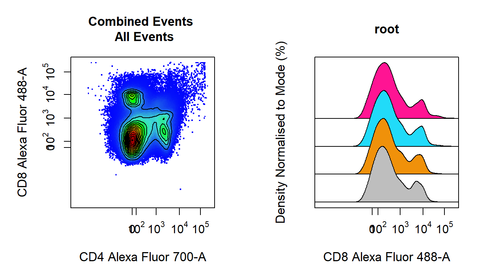
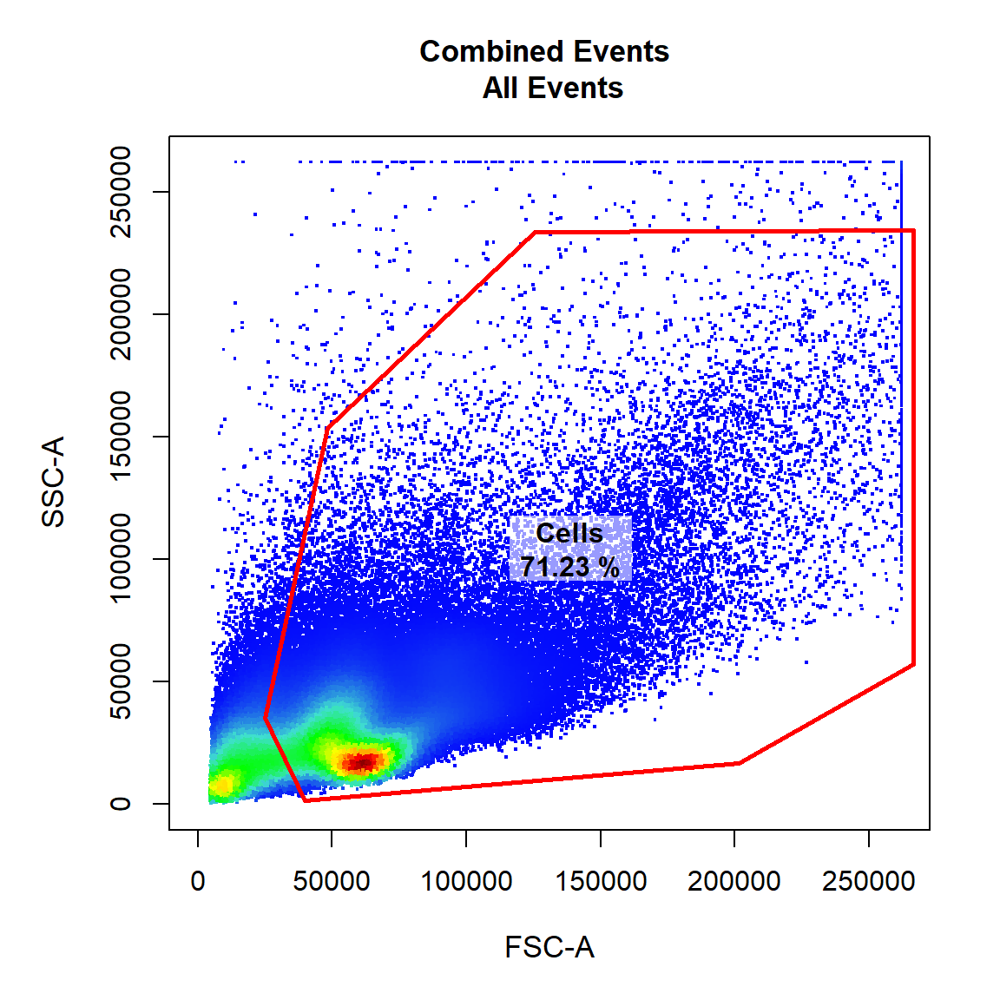
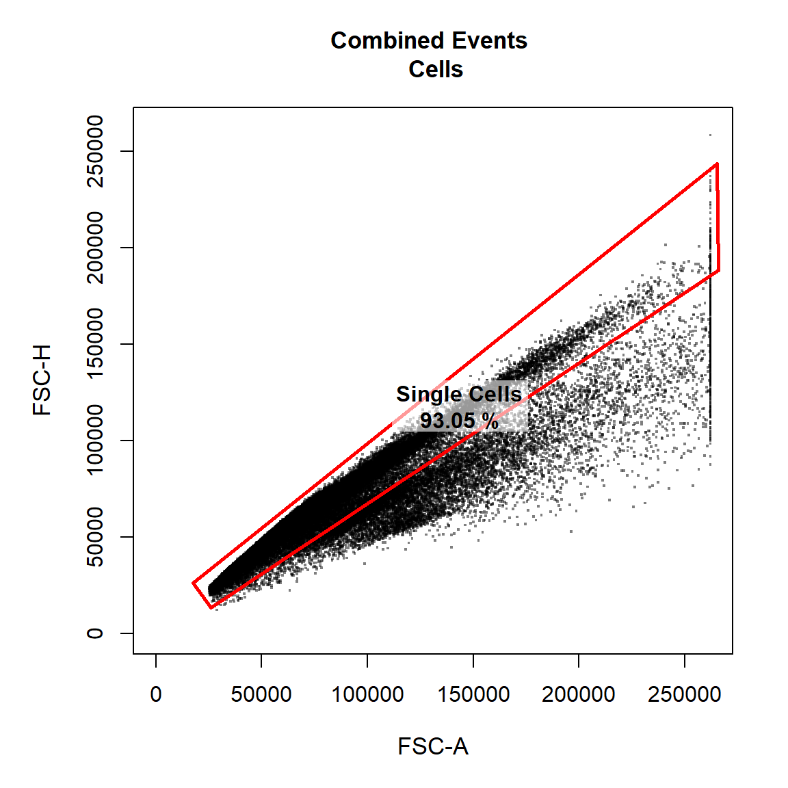
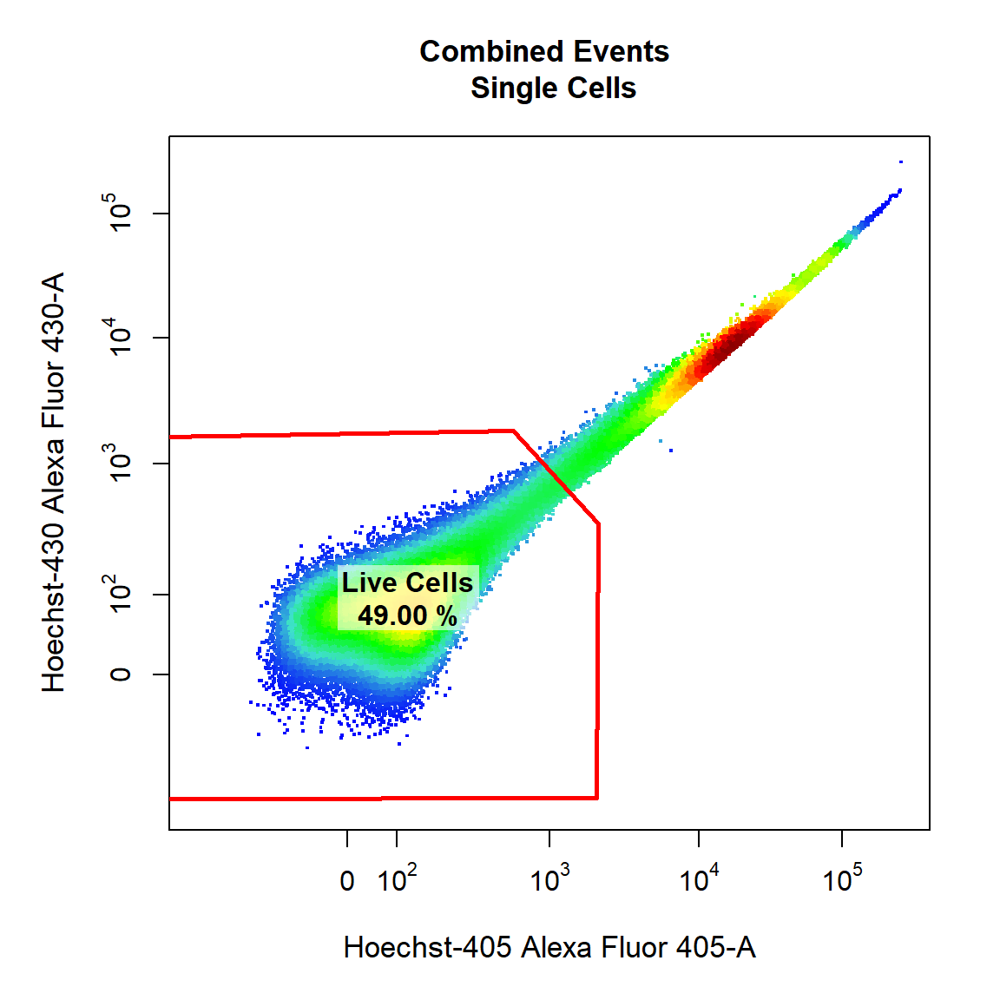
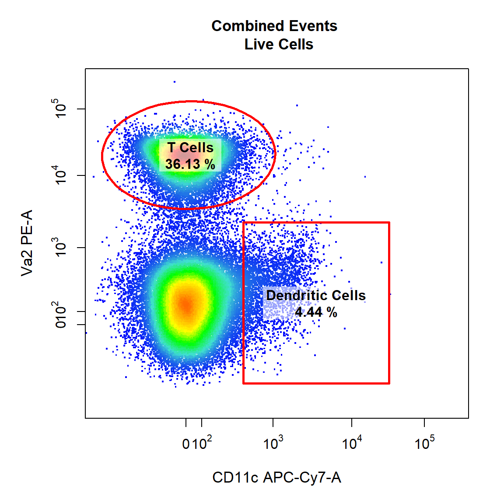
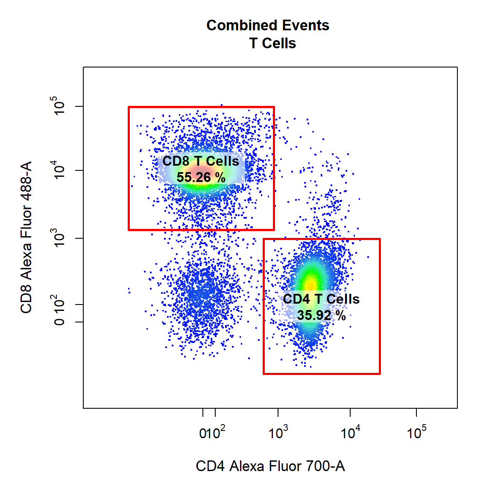
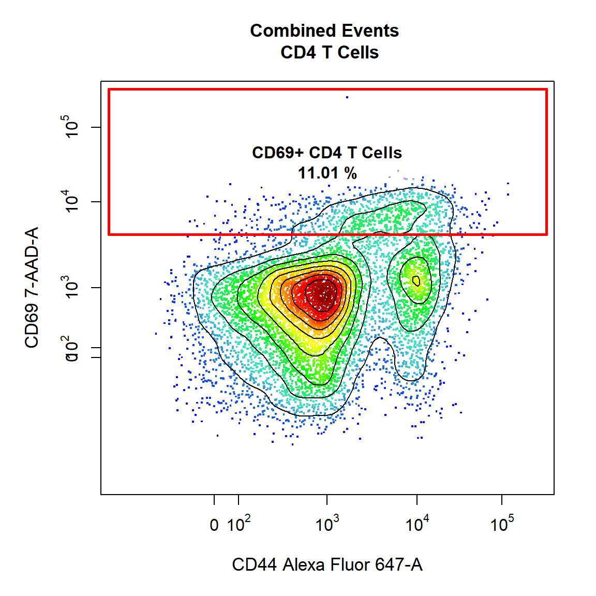
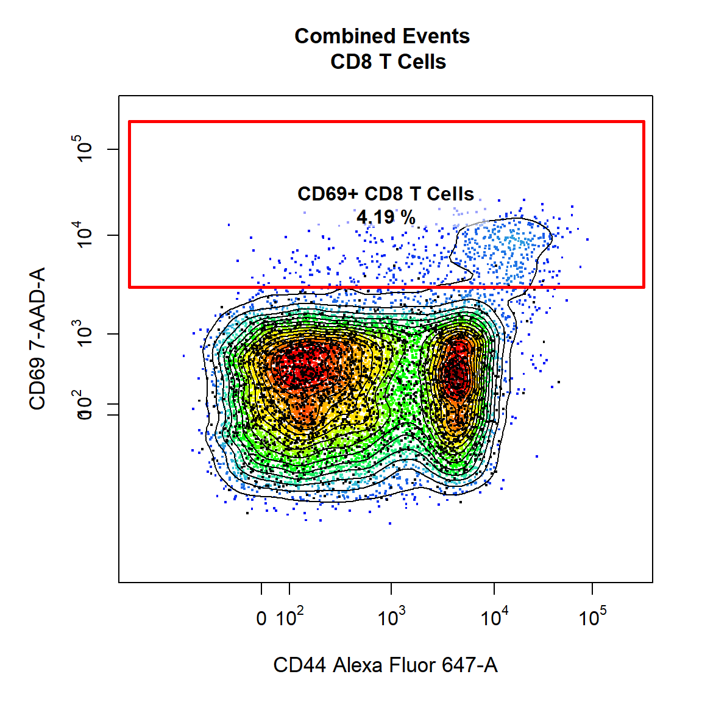
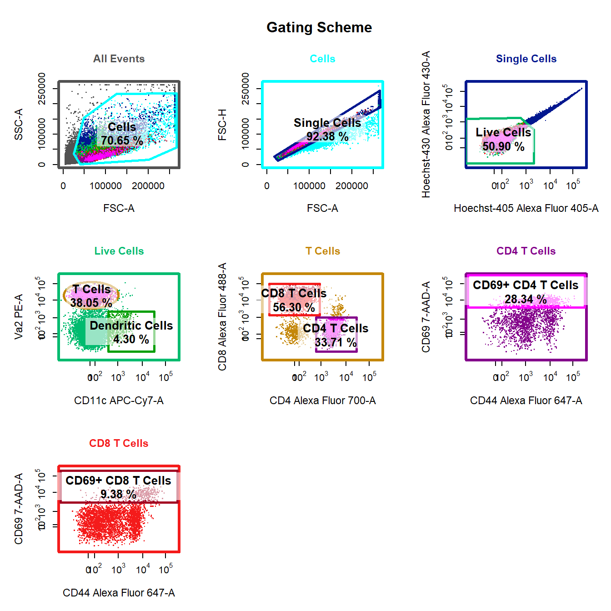
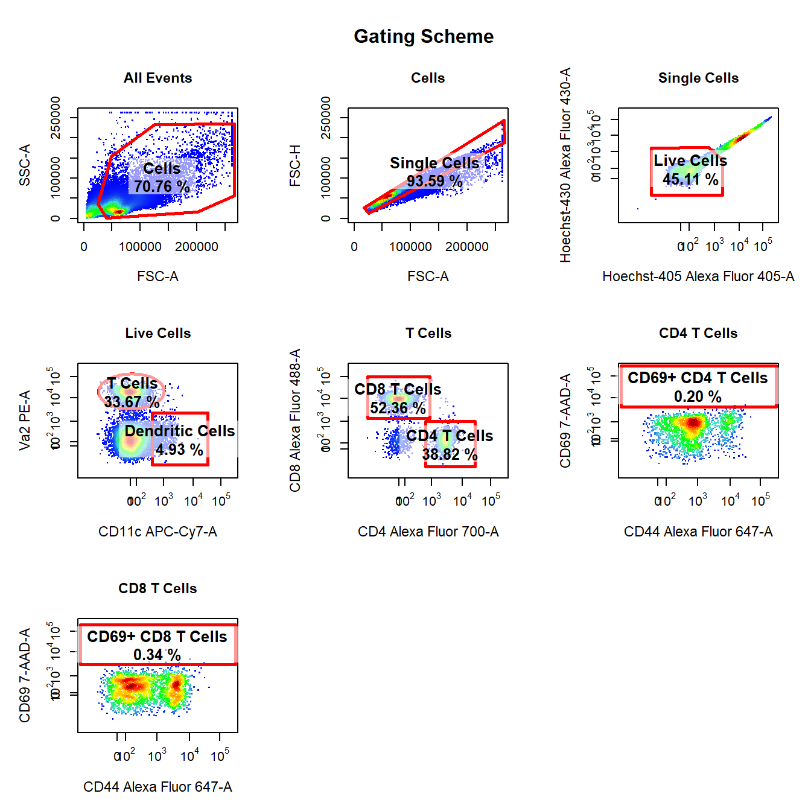

Getting Started with CytoRSuite
Dillon Hammill
2019-03-30
Source:vignettes/CytoRSuite.Rmd
CytoRSuite.RmdOverview
The main features of CytoRSuite will be documented in separate vignettes for “Compensation”, “Gating functions”, “Visualisation” and “Manual and Automated gating” respectively. Before we dive into the details, let’s demonstrate how simple it can be to analyse some in vitro T cell activation data using CytoRSuite. The Activation dataset used in this vignette is shipped with CytoRSuiteData. For more details on this dataset see ?Activation.
1. Load Required Packages
Loading CytoRSuite will automatically load flowCore, flowWorkspace and openCyto which will be required at various stages throughout the analysis process.
2. Explore Activation Dataset
# Activation is a flowSet containing 4 samples
Activation
# Individual samples can be extracted as flowFrames using [[]]
Activation[[1]]
# Raw data for each flowFrame is stored in exprs slot
Activation[[1]]@exprs
# Information is attached to each flowFrame in description slot
Activation[[1]]@description
# Spillover matrix can be extracted from description slot
Activation[[1]]@description$SPILL
# Experimental information is stored in pData
pData(Activation)
# Assign Activation to fs for brevity
fs <- Activation3. Annotate flowSet with Markers
Assigning marker names to channels will be useful downstream as we can refer to channels by their marker rather than by name. cyto_markers provides an editable table to make marker assignment easy. The details in the flowSet will automatically be updated when the window is closed. Channels without markers should have empty “Marker” entries. Edit the table to match the image below:

# Markers added to desc column in details for each flowFrame
fs[[1]]
#> flowFrame object 'Activation1.fcs'
#> with 50000 cells and 18 observables:
#> name desc range minRange maxRange
#> $P1 FSC-A <NA> 262144 0.00 262144
#> $P2 FSC-H <NA> 262144 0.00 262144
#> $P3 FSC-W <NA> 262144 0.00 262144
#> $P4 SSC-A <NA> 262144 0.00 262144
#> $P5 SSC-H <NA> 262144 0.00 262144
#> $P6 SSC-W <NA> 262144 0.00 262144
#> $P7 Alexa Fluor 488-A CD8 262144 -111.00 262144
#> $P8 PE-A Va2 262144 -111.00 262144
#> $P9 PE-Texas Red-A <NA> 262144 -111.00 262144
#> $P10 7-AAD-A CD69 262144 -111.00 262144
#> $P11 PE-Cy7-A <NA> 262144 -111.00 262144
#> $P12 Alexa Fluor 405-A Hoechst-405 262144 -111.00 262144
#> $P13 Alexa Fluor 430-A Hoechst-430 262144 -86.64 262144
#> $P14 Qdot 605-A <NA> 262144 -111.00 262144
#> $P15 Alexa Fluor 647-A CD44 262144 -111.00 262144
#> $P16 Alexa Fluor 700-A CD4 262144 -111.00 262144
#> $P17 APC-Cy7-A CD11c 262144 -111.00 262144
#> $P18 Time <NA> 262144 0.00 262144
#> 261 keywords are stored in the 'description' slot4. Annotate flowSet with Experimental Details
Experimental details can be associated with each sample using cyto_annotate which uses the same interface as cyto_markers to interactively edit pData information. This information will be used downstream for grouping samples prior to gating and will be included in the exported statistics tables to aid in statistical analysis. Modify the table to include a variable “OVAConc” with values 0, 0.005, 0.05 and 0.5 as shown in the image.

6. Apply Compensation
CytoRSuite provides three distinct functions to aid in compensation of fluorescence spillover:
-
spillover_computeprovides an automated approach to calculating the percentage of fluorescent spillover using the algorithm described by Bagwell & Adams 1993. -
spillover_editutilises an interactive Shiny interface to allow realtime visualisation of changes in spillover percentages and is designed to aid in manual manipulation of spillover matrices. -
cyto_plot_compensationdisplays each compensation control in all channels to easily identify any potential compensation issues.
These features will be documented in a separate compensation vignette, see ?spillover_compute, ?spillover_edit and ?cyto_plot_compensation for more details on these functions.
Here we will demonstrate how to apply the spillover matrix attached to each flowFrame. Recall the spillover matrix can be extracted from the description slot of the flowFrame under SPILL.
# Get attached spillover matrix
spill <- fs[[1]]@description$SPILL
spill
#> Alexa Fluor 488-A PE-A PE-Texas Red-A 7-AAD-A PE-Cy7-A
#> [1,] 1.000000000 0.18800066 0.0840010055 0.01800011 0.000000000
#> [2,] 0.006000035 1.00000000 0.5230093475 0.16800103 0.028000168
#> [3,] 0.000000000 0.00000000 1.0000000000 0.00000000 0.000000000
#> [4,] 0.000000000 0.00000000 0.0000556259 1.00000000 0.310001025
#> [5,] 0.000000000 0.00000000 0.0000000000 0.00000000 1.000000000
#> [6,] 0.000000000 0.00000000 0.0000000000 0.00000000 0.000000000
#> [7,] 0.000000000 0.00000000 0.0000000000 0.00000000 0.000000000
#> [8,] 0.000000000 0.00000000 0.0000000000 0.00000000 0.000000000
#> [9,] 0.000000000 0.00000000 0.0000000000 0.02600016 0.008000026
#> [10,] 0.000000000 0.00000000 0.0000000000 0.04100026 0.049000041
#> [11,] 0.016000008 0.01000058 0.0120008920 0.01600009 0.088000019
#> Alexa Fluor 405-A Alexa Fluor 430-A Qdot 605-A Alexa Fluor 647-A
#> [1,] 0.00000000 0.01400073 0.000000000 0.000000000
#> [2,] 0.00000000 0.00000000 0.132000815 0.000000000
#> [3,] 0.00000000 0.00000000 0.000000000 0.000000000
#> [4,] 0.00000000 0.00000000 0.000000000 0.005999995
#> [5,] 0.00000000 0.00000000 0.000000000 0.000000000
#> [6,] 1.00000000 0.00000000 0.000000000 0.000000000
#> [7,] 0.00000000 1.00000000 0.000000000 0.000000000
#> [8,] 0.00000000 0.00000000 1.000000000 0.000000000
#> [9,] 0.00000000 0.00000000 0.003000122 1.000000000
#> [10,] 0.00000000 0.00000000 0.000000000 0.004000004
#> [11,] 0.01199991 0.00800065 0.019000078 0.032000004
#> Alexa Fluor 700-A APC-Cy7-A
#> [1,] 0.00000000 0.000
#> [2,] 0.00000000 0.000
#> [3,] 0.00000000 0.000
#> [4,] 0.03699999 0.015
#> [5,] 0.00000000 0.000
#> [6,] 0.00000000 0.000
#> [7,] 0.00000000 0.000
#> [8,] 0.00000000 0.000
#> [9,] 0.35900000 0.090
#> [10,] 1.00000000 0.270
#> [11,] 0.11400001 1.000
# Compensate samples with spill
gs <- compensate(gs, spill)7. Transform Fluorescent Channels
In order to appropriately visualise the data, we first need to transform all fluorescent channels post-compensation. Currently, CytoRSuite only supports the logicle transformation documented in the flowCore package. Below we use estimateLogicle to get parameter estimates for each fluorescent channel and apply these transformations to the GatingSet using the transform function from flowCore.
8. Visualise GatingSet using cyto_plot
Visualising 1-D density distributions and 2-D scatter plots of flow cytometry data is made easy with cyto_plot. cyto_plot is capable of handling flowFrame, flowSet, GatingHierarchy and GatingSet objects. Any function in CytoRSuite which makes a call to plot uses cyto_plot internally and can therefore accept any of its arguments to customise the plot output. In a similar fashion to ggplot2, cyto_plot has arguments of the form geom_aes (e.g. point_col) which make it autocomplete friendly. Additional plotting functions such as cyto_plot_profile and cyto_plot_gating_scheme allow the user to look at expression profiles and gating schemes respectively. All these visualisation tools will be detailed in the “Visualisation” vignette.
# 2-D scatter plot with contour lines
cyto_plot(gs,
parent = "root",
channels = c("CD4","CD8"),
group_by = "all",
contour_lines = 15)
#1-D stacked density distributions
cyto_plot(gs,
parent = "root",
channels = "CD8",
density_stack = 0.5)
9. Draw Gates Using gate_draw to Complete the Gating Scheme
gate_draw is a convenient wrapper for the gating functions in CytoRSuite which constructs drawn gates, applies the gate(s) directly to the GatingSet and saves the gate(s) to an openCyto gatingTemplate csv file for future use. gate_draw will pool the data based on group_by and plot it in an interactive plotting window which will allow the user to draw gates around the population of interest. The type of gate is determined by the type argument. Below we will demonstrate some of the key features of gate_draw, for details on specific gate types please refer to the gating functions vignette.
9.1 Gate Cells Using a Polygon Gate
Here we will gate a population “Cells” within the parent population “root” in FSC-A and SSC-A channels using a polygon gate. Polygon gates can be closed by right clicking and selecting “stop”. The gate will be automatically applied to the GatingSet and saved in a gatingTemplate csv called “Example gatingTemplate.csv” in the current working directory.
# Cells
gate_draw(gs,
parent = "root",
alias = "Cells",
channels = c("FSC-A","SSC-A"),
type = "polygon",
gatingTemplate = "Example-gatingTemplate.csv")
9.2 Gate Single Cells Using a Polygon Gate
Here we will gate a population “Single Cells” within the parent population “Cells” in FSC-A and FSC-H channels using a polygon gate. Notice how this gate is added as a row to the gatingTemplate csv file. Let’s make the points black and add some transparency to get an idea of point density.
# Single Cells
gate_draw(gs,
parent = "Cells",
alias = "Single Cells",
channels = c("FSC-A","FSC-H"),
type = "polygon",
gatingTemplate = "Example-gatingTemplate.csv",
point_col = "black",
point_alpha = 0.5)
9.3 Gate Live Cells Using Polygon Gate
Here we will gate a population “Live Cells” within the parent population “Single Cells” in Alexa Fluor 405-A and Alexa Fluor 430-A channels using a polygon gate. Notice how the axes have been transformed appropriately on the plot as these fluorescent channels were transformed with the logicle transformation earlier.
# Live Cells
gate_draw(gs,
parent = "Single Cells",
alias = "Live Cells",
channels = c("Alexa Fluor 405-A","Alexa Fluor 430-A"),
type = "polygon",
gatingTemplate = "Example-gatingTemplate.csv")
9.4 Gate Dendritic Cells and T Cells Using Rectangle and Ellipsoid Gates
Next we will demonstrate the ability to draw multiple gates (of the same or different type) onto the same plot. Here we will gate both the “Dendritic Cells” and “T Cells” populations within the parent population “Live Cells” in APC-Cy7-A and PE-A channels using a rectangle and an ellipsoid gate. To gate multiple populations on the same plot simply supply multiple names to the alias argument wrapped inside c(). Notice how we can use the marker names rather than the channel names since we assigned these using cyto_markers. Ellipsoid gates require selection of 4 points whilst rectangle gates require selection of 2 diagonal points to define the limits of the gate in 2 dimensions.
# Dendritic Cells & T cells
gate_draw(gs,
parent = "Live Cells",
alias = c("Dendritic Cells", "T Cells"),
channels = c("CD11c","Va2"),
type = c("rectangle","ellipse"),
gatingTemplate = "Example-gatingTemplate.csv")
9.5 Gate CD4 T Cells and CD8 T Cells Using Rectangle Gates
Here we will gate both the “CD4 T Cells” and “CD8 T Cells” populations within the parent population “T Cells” in Alexa Fluor 700-A and Alexa Fluor 488-A channels using a rectangle gates. Notice how gate type can also be abbreviated as the first letter of the gate type (e.g. “r” for “rectangle”). Be sure to draw the gates in the order that they are listed in the alias argument.
# CD4 & CD8 T Cells
gate_draw(gs,
parent = "T Cells",
alias = c("CD4 T Cells", "CD8 T Cells"),
channels = c("CD4","CD8"),
type = "r",
gatingTemplate = "Example-gatingTemplate.csv")
9.6 Gate CD69+ CD4 T Cells Using Interval Gate
Here we will demonstrate the use of a different gate_type called “interval” which gates populations based on a defined lower and upper bound. Interval gates are traditionally used in a single dimension, but interval gates are fully supported for 2-dimensional plots on either the x or y axis. Notice how we have indicated which axis we would like to gate using the axis argument. In this case we will be gating the population based on a lower and upper y axis bounds. We will also add some contour lines to aid in gating.
# CD69+ CD4 T Cells
gate_draw(gs,
parent = "CD4 T Cells",
alias = c("CD69+ CD4 T Cells"),
channels = c("CD44","CD69"),
type = "interval",
axis = "y",
gatingTemplate = "Example-gatingTemplate.csv",
contour_lines = 15)
9.7 Gate CD69+ CD8 T Cells Using Interval Gate
To finish things off lets make a similar gate on the CD8 T Cells as well. This time we will overlay the unactivated control in black and use it to determine where gate should be drawn.
# Extract the CD8 T Cells from Sample 1 for overlay
CD8 <- getData(gs, "CD8 T Cells")[[1]]
# CD69+ CD8 T Cells
gate_draw(gs,
parent = "CD8 T Cells",
alias = c("CD69+ CD8 T Cells"),
channels = c("CD44","CD69"),
type = "interval",
axis = "y",
gatingTemplate = "Example-gatingTemplate.csv",
contour_lines = 15,
overlay = CD8)
10. Visualise Gating Scheme Using cyto_plot_gating_scheme
# Back-gating and gate tracking
cyto_plot_gating_scheme(gs[[4]], back_gate = TRUE, gate_track = TRUE, legend = FALSE)
11. Apply Saved Gates to Samples (Future Analyses)
Since all the drawn gates have been saved to the gatingTemplate, next time you visit the data there is no need to re-draw gates! Simply apply the existing gatingTemplate to the data and you are right where you left off!
# Add samples to GatingSet
gs <- GatingSet(fs)
# Apply compensation
gs <- compensate(gs, spill)
# Transform fluorescent channels
gs <- transform(gs, trans)
# Apply saved gates to GatingSet
gt <- gatingTemplate("Example-gatingTemplate.csv")
gating(gt, gs)
# Check gates have been applied
getNodes(gs)#> [1] "root"
#> [2] "/Cells"
#> [3] "/Cells/Single Cells"
#> [4] "/Cells/Single Cells/Live Cells"
#> [5] "/Cells/Single Cells/Live Cells/Dendritic Cells"
#> [6] "/Cells/Single Cells/Live Cells/T Cells"
#> [7] "/Cells/Single Cells/Live Cells/T Cells/CD8 T Cells"
#> [8] "/Cells/Single Cells/Live Cells/T Cells/CD8 T Cells/CD69+ CD8 T Cells"
#> [9] "/Cells/Single Cells/Live Cells/T Cells/CD4 T Cells"
#> [10] "/Cells/Single Cells/Live Cells/T Cells/CD4 T Cells/CD69+ CD4 T Cells"